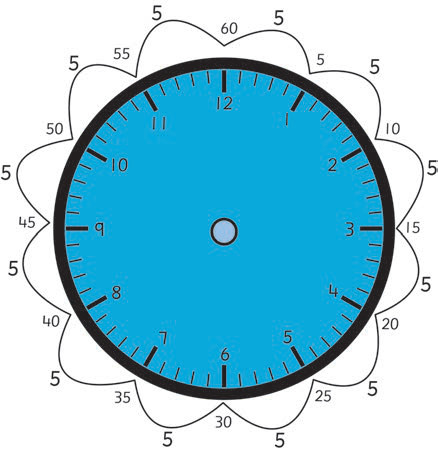
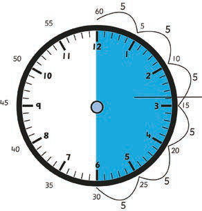
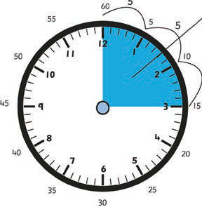

Study the following diagram, and learn how the clock face is divided.

60 minutes represent one hour
The minute-hand takes five minutes to rotate from one number to the next on the clock face. You can read 30 minutes as half an hour, and 15 minutes as quarter an hour. This is illustrated in the following figures.

Half an hour
30 minutes is half an hour

Quarter an hour
15 minutes is quarter an hour